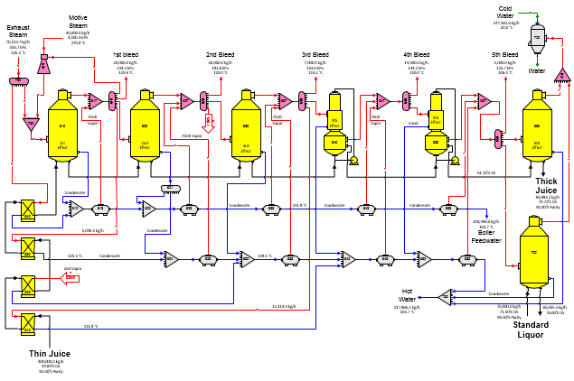

The flow diagram for a six-effect evaporator with thin juice heating, thermocompression, split condensate flashing, and standard liquor concentration is shown in the above diagram. Required and pressure feedback flows are identified on the flow diagram. Steam pressure of the flow leaving the thermocompressor (station no. 619) is set by receiver station no. 750 while the motive steam flow into the thermocompressor is specified. The steam flow from the thermocompressor (station no. 619) to the steam receiver (station no. 750) is a pressure feedback flow. Additional steam needed by the multiple-effect to concentrate thin juice into thick juice at the percent (%) dry substance specified in the last effect (6th effect, station no. 660) is provided by the exhaust steam distributor (station no. 690). Exhaust steam is also used for the 4th thin juice heater (station no. 540); so, both output flows from the exhaust steam distributor are required flows. Because both flows out of the distributor are required, the flow into the exhaust steam distributor is required. Therefore, the quantity of exhaust steam required in the model is automatically calculated by Sugars. Changing the thin juice flow into the model at station no. 510 will result in Sugars calculating a new value for the exhaust steam. Also, if the quantity of standard liquor to the standard liquor concentrator is changed, the consumption of 5th vapor by the standard liquor concentrator (station no. 700) will change, and the new exhaust steam into the model will be calculated automatically by Sugars during the balance calculations. Pressure values have been specified for the vapor out of each effect and for the standard liquor concentrator; therefore, if the quantity of thin juice is changed, the vapor pressure (and temperature) for each effect will remain constant. The specified vapor pressure for each effect can be changed to use heat transfer coefficient instead so that the vapor pressure and temperature for each effect will fluctuate as the load on the multiple-effect changes (see section Evaporator Properties for changing heat transfer coefficients).